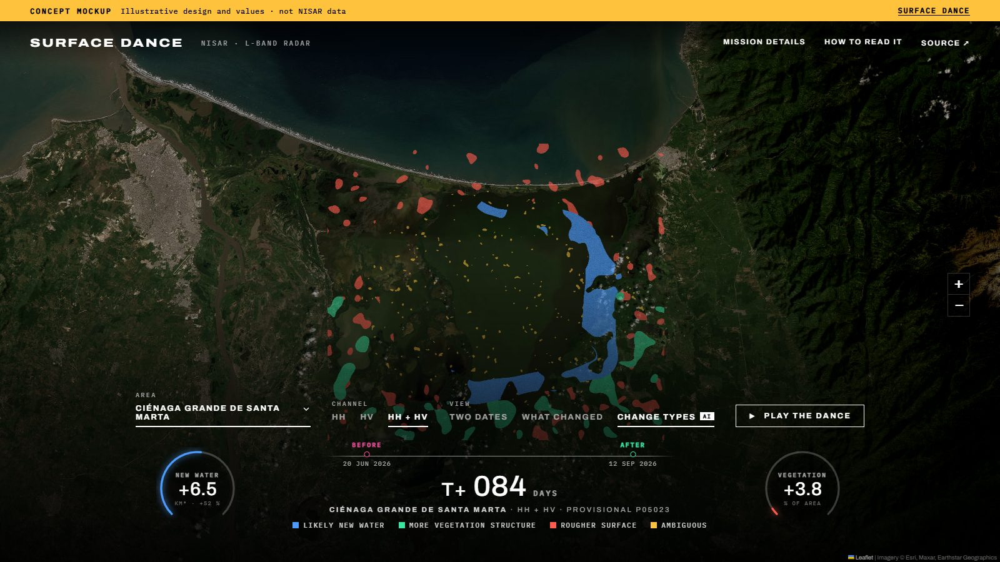
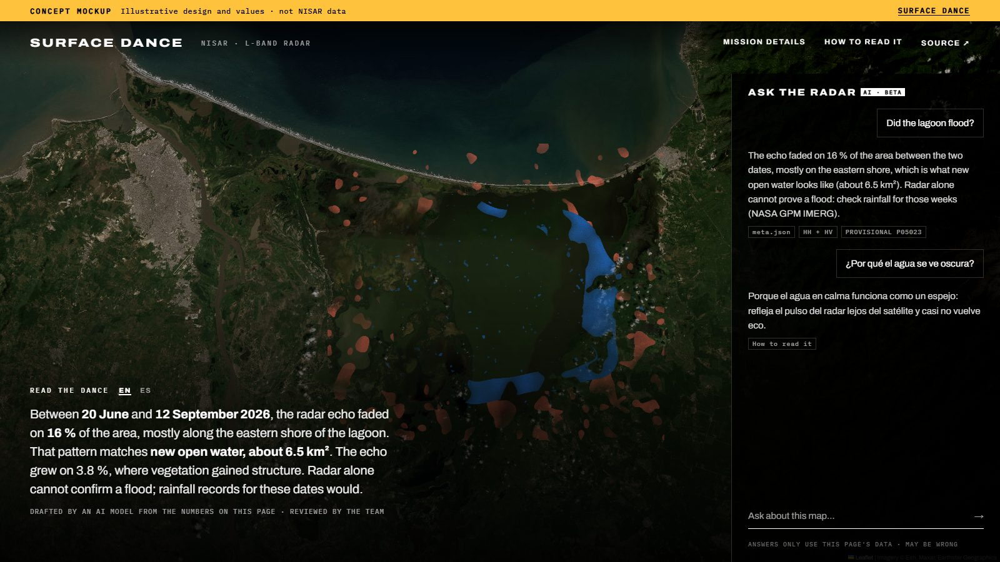

Los Bailarines del SAR · NASA Space Apps Challenge 2026
Surface
Dance
An open, interactive explorer that shows how Earth's surface moved between two dates, read by NISAR radar through cloud, night and snow.
Un explorador abierto e interactivo que muestra cómo se movió la superficie de la Tierra entre dos fechas, leída por el radar NISAR a través de nubes, noche y nieve.
ChallengeRetoDancing with the SARs
DeadlineCierreSun 15 Nov · 23:59 BogotáDom 15 nov · 23:59 Bogotá
StatusEstadoViewer live · waiting for real scenesVisor publicado · faltan escenas reales
View onlineVer en línea → fredyxander.github.io/bailarines-del-sar/presentation
01 · The challenge01 · El reto
What NASA asks forLo que pide NASA
An interactive app, open source and easy to use
Built on NISAR radar data (NASA–ISRO, L-band)
Track one type of surface change at a real place
Compare different dates, show the change clearly
Explain why it changed: the physical drivers
Tell it as a story: the Earth's surface dancing
Una aplicación interactiva, de código abierto y fácil de usar
Basada en datos de radar NISAR (NASA–ISRO, banda L)
Seguir un tipo de cambio de superficie en un lugar real
Comparar fechas distintas y mostrar el cambio con claridad
Explicar por qué cambió: las causas físicas
Contarlo como historia: la superficie de la Tierra bailando
Max 7 slides or a 30-second video. Public, no login.
Máximo 7 diapositivas o un video de 30 segundos. Público, sin inicio de sesión.
Public link to the repository and the app. No login.
Enlace público al repositorio y a la app. Sin inicio de sesión.
At least one NASA dataset or resource, with its full URL.
Al menos un conjunto de datos o recurso de NASA, con su URL completa.
02 · The idea in four pictures02 · La idea en cuatro imágenes
How a radar satellite sees changeCómo un satélite de radar ve el cambio
1 · It brings its own light1 · Lleva su propia luz
NISAR sends a radio pulse to the ground and listens to the echo, like clapping in a dark room. It works at night and right through clouds.
NISAR envía un pulso de radio al suelo y escucha el eco, como aplaudir en un cuarto oscuro. Funciona de noche y atraviesa las nubes.
2 · Water is a mirror2 · El agua es un espejo
Calm water bounces the pulse away, so almost no echo comes back. In radar images, water looks dark.
El agua en calma desvía el pulso y casi no vuelve eco. En las imágenes de radar, el agua se ve oscura.
3 · Rough things echo back3 · Lo rugoso devuelve eco
Trees, crops, rocks and broken ice scatter the pulse in every direction, and part of it returns. They look bright.
Árboles, cultivos, rocas y hielo quebrado dispersan el pulso en todas direcciones y una parte regresa. Se ven claros.
4 · Compare two dates4 · Comparar dos fechas
Same place, two dates. Where it got darker, water may have arrived (blue). Where it got brighter, the surface got rougher (red).
Mismo lugar, dos fechas. Donde se oscureció, pudo llegar agua (azul). Donde se aclaró, la superficie se volvió más rugosa (rojo).
That is the whole app: two radar photos of the same place, a line to slide between them, and a map of what changed.
Esa es toda la app: dos fotos de radar del mismo lugar, una línea para pasar de una a otra y un mapa de lo que cambió.
03 · Already built · branch03 · Ya construido · rama main Live
What we already haveLo que ya tenemos
Live web app — map with a line to slide between two dates, "What changed" view, Play the dance, launch-style HUD.
NISAR pipeline — reads GCOV (HDF5), crops the area, filters speckle, computes change and publishes map layers.
Safety rules — refuses to compare scenes from different collections or CRIDs; every scene shows its date, collection and CRID.
Demo mode — synthetic scenes to test everything, always under a yellow "not NISAR data" banner.
Quality gate — every pull request gets a preview link and automatic tests; main only accepts tested changes.
App web publicada — mapa con una línea para pasar entre dos fechas, vista "What changed", Play the dance y HUD estilo lanzamiento.
Pipeline NISAR — lee GCOV (HDF5), recorta la zona, filtra el speckle, calcula el cambio y publica las capas del mapa.
Reglas de seguridad — no compara escenas de colecciones o CRID distintos; cada escena muestra su fecha, colección y CRID.
Modo demo — escenas sintéticas para probarlo todo, siempre bajo una franja amarilla "not NISAR data".
Control de calidad — cada pull request tiene vista previa y pruebas automáticas; main solo acepta cambios probados.
04 · What we expect at the end04 · Lo que esperamos al final
The final screenLa pantalla final


Concept mockups made with the real site design over the real satellite basemap. Shapes and numbers are illustrative, not NISAR data.
Maquetas conceptuales hechas con el diseño real del sitio sobre el mapa satelital real. Las formas y cifras son ilustrativas, no son datos NISAR.
05 · The platform, in plain words05 · La plataforma, en palabras sencillas
What you can doLo que puedes hacer
Pick a placeElige un lugar
Choose a spot on Earth, like a big lagoon in Colombia.
Escoge un sitio de la Tierra, como una gran ciénaga en Colombia.
See it with radarMíralo con radar
See it the way the satellite does, even at night or under clouds.
Míralo como lo ve el satélite, incluso de noche o con nubes.
Travel in timeViaja en el tiempo
Slide the line to jump between two dates. Press Play and watch the ground dance.
Desliza la línea para saltar entre dos fechas. Pulsa Play y mira bailar el suelo.
Spot the changeEncuentra el cambio
Blue: the echo got weaker, maybe water arrived. Red: the echo got stronger.
Azul: el eco se debilitó, quizá llegó agua. Rojo: el eco se hizo más fuerte.
Switch how it listensCambia cómo escucha
HH is best at telling water from land. HV hears plants and branches.
HH distingue mejor el agua de la tierra. HV escucha plantas y ramas.
Know what kind of changeSabe qué tipo de cambio AI
Colors sort every change: new water, more plants, rougher ground, or not sure.
Los colores ordenan cada cambio: agua nueva, más plantas, suelo más rugoso o no se sabe.
Count the waterCuenta el agua AI
Get a number: how many km² of water appeared. 1 km² is about 140 soccer fields.
Obtén un número: cuántos km² de agua aparecieron. 1 km² son unas 140 canchas de fútbol.
Read the storyLee la historia AI
A short explanation in English or Spanish, checked by our scientist.
Una explicación corta en inglés o español, revisada por nuestro científico.
Ask a questionHaz una pregunta AI · if timeIA · si hay tiempo
Type a question and get an answer that only uses this map's numbers.
Escribe una pregunta y recibe una respuesta que solo usa los números de este mapa.
Check where it comes fromRevisa de dónde viene
Every image shows its date and its NISAR collection. Nothing is hidden.
Cada imagen muestra su fecha y su colección NISAR. Nada está oculto.
No account, no install, no radar degree: open a link, pick a place, and watch the surface move.
Sin cuenta, sin instalar nada y sin saber de radares: abre un enlace, elige un lugar y mira moverse la superficie.
06 · To stand out06 · Para destacar AI
The AI layerLa capa de IA
Change typesTipos de cambio
Groups every pixel by how HH and HV changed together: likely new water, more vegetation structure, rougher surface, ambiguous. Unsupervised (k-means), rules visible.
Agrupa cada píxel según cómo cambiaron HH y HV juntos: posible agua nueva, más estructura vegetal, superficie más rugosa, ambiguo. Sin etiquetas (k-means), con reglas visibles.
Fredy
Water in km²Agua en km²
Automatic water mask on each date (Otsu threshold, standard in SAR flood mapping): "water grew from X to Y km²".
Máscara de agua automática en cada fecha (umbral de Otsu, estándar en mapeo de inundaciones con SAR): "el agua pasó de X a Y km²".
Moneeb
Read the dance
A short summary in English and Spanish, drafted by a language model only from the computed numbers, reviewed by Santiago and labelled as AI.
Un resumen corto en inglés y español, redactado por un modelo de lenguaje solo con los números calculados, revisado por Santiago y marcado como IA.
Fredy · Santiago
Ask the radar
A chat that answers questions using only this page's data. Needs a small server to keep the API key private.
Un chat que responde preguntas usando solo los datos de la página. Necesita un pequeño servidor para proteger la clave de la API.
Fredy
OrderReal data first (Sun 10:00), AI second. Not ready by Sun 15:00 → we ship without it.
OrdenPrimero los datos reales (dom 10:00), después la IA. Si no está lista el dom 15:00 → entregamos sin ella.
HonestyAI explains and groups; it never predicts floods or damage. Every AI output is labelled.
HonestidadLa IA explica y agrupa; nunca predice inundaciones ni daños. Todo lo que genera va marcado.
Declare itUpdate the README "Use of AI tools" statement and the Space Apps AI field.
DeclararlaActualizar la declaración "Use of AI tools" del README y el campo de IA de Space Apps.
07 · Still to build for the challenge07 · Lo que falta para el reto To do
What is missingLo que falta
Data & scienceDatos y ciencia
01Confirm study area and the one-sentence questionConfirmar zona de estudio y la pregunta en una fraseJuan H.
02Download 2 NISAR GCOV scenes, same collectionDescargar 2 escenas NISAR GCOV, misma colecciónTinjacá
03Record date, collection and CRID of each sceneRegistrar fecha, colección y CRID de cada escenaTinjacá
04Check polarizations with --list (HH, HV)Verificar polarizaciones con --list (HH, HV)Moneeb
05Write why the surface changed (physical drivers)Escribir por qué cambió la superficie (causas físicas)Santiago
06Approve method values: filter 5×5, threshold 3 dBAprobar valores del método: filtro 5×5, umbral 3 dBSantiago
App & deliveryApp y entrega
07Run the pipeline on real scenes, publish layersCorrer el pipeline con escenas reales y publicarFredy
08Add the drivers text and final wording to the appAgregar a la app el texto de causas y la redacción finalFredy
097 demo slides with the dance narrative7 diapositivas de demo con la narrativa de la danzaDaira
10Test both public links from a clean deviceProbar los dos enlaces públicos desde un equipo limpioMoneeb
11Decide: project name, keep or remove demo modeDecidir: nombre del proyecto, mantener o quitar el demoJuan H.
12Fill the form, check every claim, submit by 22:00Llenar el formulario, revisar cada afirmación, enviar 22:00Juan H.
AI layerCapa de IA
13Change types: clustering on HH + HV changeTipos de cambio: agrupación con el cambio HH + HVFredy
14Water mask per date and km² in the HUDMáscara de agua por fecha y km² en el HUDMoneeb
15"Read the dance" summary, English + SpanishResumen "Read the dance", inglés + españolFredy
16Review AI text and change-type rulesRevisar el texto de IA y las reglas de los tiposSantiago
17Update the AI declaration (README + form)Actualizar la declaración de IA (README + formulario)Juan H.
18If time allows: "Ask the radar" chatSi queda tiempo: chat "Ask the radar"Fredy
08 · What waits for what08 · Qué espera a qué
Task dependenciesDependencias de tareas
09 · Who does what09 · Quién hace qué
Team tasksTareas del equipo
| MemberIntegrante | TaskTarea | DeliverableEntregable | Due · BogotáLímite · Bogotá |
|---|---|---|---|
| Juan S. Huertas OleaLead · research · storyLíder · investigación · relato | Study area, research question, project name; owns the submission form.Zona de estudio, pregunta, nombre del proyecto; responsable del formulario. AI declaration.Declaración de IA. | Question in one line; form submitted with every claim checkedPregunta en una línea; formulario enviado y revisado | Now · Sun 22:00Ya · dom 22:00 |
| Juan S. TinjacáGIS · remote sensingSIG · teledetección | Download two NISAR GCOV scenes of the same area, same collection.Descargar dos escenas NISAR GCOV de la misma zona y colección. | Files + collection, CRID, date inArchivos + colección, CRID y fecha en docs/DATOS.md | As soon as possibleLo antes posible |
| Fredy ChaparroArchitecture · front · backArquitectura · front · back | Run the pipeline on real data; keep app, tests and repo healthy.Correr el pipeline con datos reales; mantener app, pruebas y repo. Change types (k-means), AI integration; chat if time.Tipos de cambio (k-means), integración de IA; chat si hay tiempo. | Real layers live; AI views in the appCapas reales publicadas; vistas de IA en la app | Sun 10:00 · AI 15:00Dom 10:00 · IA 15:00 |
| Santiago CalderónScience validationValidación científica | Explain the physical drivers; veto any claim we cannot support.Explicar las causas físicas; vetar lo que no podamos sostener. Review AI summary and change-type rules.Revisar el resumen de IA y las reglas de tipos. | Drivers paragraph + approved method valuesPárrafo de causas + valores del método aprobados | Sun 10:00 · AI 15:00Dom 10:00 · IA 15:00 |
| Daira PatarroyoStory · design · videoRelato · diseño · video | Demo slides and the dance narrative; brand rules (no NASA logos).Diapositivas de demo y narrativa de la danza; reglas de marca (sin logos NASA). Use the AI summary in the story.Usar el resumen de IA en el relato. | 7 slides, public link7 diapositivas, enlace público | Sun 18:00Dom 18:00 |
| Moneeb HussainSignals · software · PakistanSeñales · software · Pakistán | Check polarizations; test links from Pakistan; night shift.Verificar polarizaciones; probar enlaces desde Pakistán; turno nocturno. Water mask in km².Máscara de agua en km². | Polarization check, clean-device test, water maskRevisión de polarización, prueba limpia, máscara de agua | AI 15:00 · test 18:00IA 15:00 · prueba 18:00 |
10 · How we work10 · Cómo trabajamos
From task to live siteDe la tarea al sitio publicado
Each task becomes a GitHub issue with an owner
Cada tarea es un issue de GitHub con responsable
Work on your own branch, never on main
Trabaja en tu propia rama, nunca en main
Open a PR that closes the issue
Abre un PR que cierre el issue
A private copy of the site and automatic checks
Una copia del sitio y pruebas automáticas
Fredy reviews; Santiago checks science text
Fredy revisa; Santiago valida el texto científico
The public site updates in 1–2 minutes
El sitio público se actualiza en 1–2 minutos
Data pathRuta de los datos
11 · Important links11 · Enlaces importantes
Where everything livesDónde está todo
Live appApp publicadafredyxander.github.io/bailarines-del-sar
RepositoryRepositoriogithub.com/fredyxander/bailarines-del-sar
Demo with synthetic dataDemo con datos sintéticos…/bailarines-del-sar/?demo=1
How to run the pipelineCómo correr el pipelineREADME · Flujo de trabajo
Scene log (collection · CRID · date)Registro de escenas (colección · CRID · fecha)docs/DATOS.md
PR previewsVistas previas de PR…/bailarines-del-sar/pr-preview/pr-<n>/
NISAR dataDatos NISARsearch.asf.alaska.edu · nisar-docs.asf.alaska.edu
Reference documentsDocumentos de referenciabase reference/
This presentationEsta presentación…/bailarines-del-sar/presentation/ · ?lang=es
This presentation · PDFEsta presentación · PDFEnglish · Español
NextApprove this briefing → turn slide 8 into GitHub issues, one per task, with an owner.
SiguienteAprobar esta presentación → convertir la diapositiva 8 en issues de GitHub, uno por tarea, con responsable.